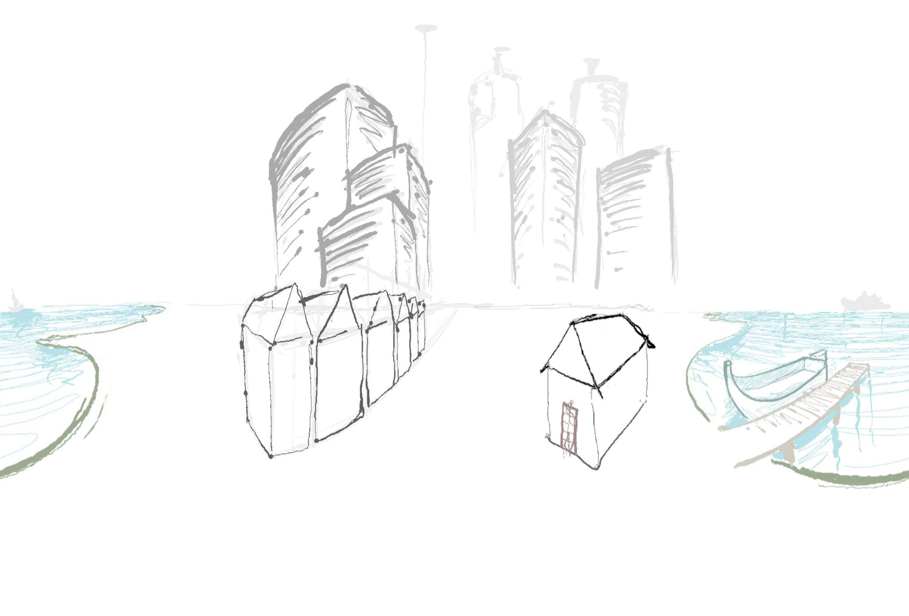

<div class="modal fade" id="sketch360_modal" tabindex="-1" aria-labelledby="sketch360Label" aria-hidden="true">
	<div class="modal-dialog modal-xl">
		<div class="modal-content">
			<div class="modal-header">
				<h5 class="modal-title" id="sketch360Label">360 Sketching App</h5>
				<button type="button" class="btn-close" data-bs-dismiss="modal" aria-label="Close"></button>
			</div>
			<div class="modal-body d-flex justify-content-center">
				<div class="col-md-9">


<!-- 					<div class="row-cols-1">
						<iframe width="560" height="400" src="https://www.youtube-nocookie.com/embed/Awozhaly3w8" title="YouTube video player" frameborder="0" allow="accelerometer; autoplay; clipboard-write; encrypted-media; gyroscope; picture-in-picture" allowfullscreen></iframe>
					</div> -->

					<div class="row-cols-1">
						<figure class="figure">
							<div class="embed-container">
								<iframe src="https://www.youtube-nocookie.com/embed/OFIeVEUKNJY" title="YouTube video player" frameborder="0" allow="accelerometer; autoplay; clipboard-write; encrypted-media; gyroscope; picture-in-picture" allowfullscreen></iframe>
							</div>
							<!-- <figcaption class="figure-caption p-1">Submission video.</figcaption> -->
						</figure>
					</div>

					<p>
					I wanted to try 360 panorama sketching on my iPad that lets me paint "through the camera" rather than in the unwrapped lat-long projection. I built a web-app supporting iPad's Apple Pencil to test this.

					<ul>
						<li>Built using three.js, runs in-browser: <a href="https://oepd0.csb.app/app.html">[Demo Link]</a></li>
						<li>Supports iPad Apple Pencil pressure sensitivity.</li>
						<li>Uses a movable 3D grid for perspective guides.</li>
					</ul>
					</p>


					<figure class="figure">
						<a href="../assets/images/demo360.jpg">
						
						</a>
						<figcaption class="figure-caption p-1">
							Hand-drawn panorama exported from my app.
						</figcaption>
					</figure>

				</div>
			</div>
			<div class="modal-footer">
				<button type="button" class="btn btn-secondary" data-bs-dismiss="modal">Close</button>
			</div>
		</div>
	</div>
</div>
